Anleitung
Hier findest du jede Funktion von ImberGym Schritt für Schritt erklärt. Funktionen mit PREMIUM gehören zu ImberGym Premium; alles andere ist gratis. In der Beta ist alles frei.
01Erste Schritte
Beim ersten Öffnen führt dich ImberGym durch ein paar kurze Fragen. Alles lässt sich später im Profil ändern.
- Sprache – Deutsch oder Englisch (vorausgewählt nach deinem Handy).
- Einheiten – metrisch (kg, km) oder imperial (lb, mi). Intern rechnet die App immer genau, die Einheit ist nur die Anzeige.
- Über dich – Name, Geschlecht (auch „keine Angabe“), Alter, optional Gewicht und Größe. Gewicht und Größe braucht die App für Körpergewichtsübungen und das Kalorienziel.
- Ziel und Training – Ziel (z. B. Muskelaufbau, Abnehmen), Aktivität, Trainingsort (Studio, Zuhause mit Hanteln, ohne Equipment) und auf Wunsch feste Trainingstage. Trainingstage sind nur eine Vorplanung – nichts wird als „verpasst“ gewertet.
- Satzpause-Timer – ob nach jedem Satz ein Countdown läuft.
- Kalorien zählen? – ohne Ernährung verschwindet der Tab „Ernährung“; ImberGym ist dann ein reines Trainingsbuch.
- Startplan und Kalender – auf Wunsch legt die App einen passenden Einsteigerplan an und trägt Trainings in deinen Kalender ein (siehe Kalender).
Neues Handy? Tippe auf der ersten Seite auf „Sicherung wiederherstellen“ und wähle die ZIP-Datei deiner Sicherung (siehe Sicherung).
02Aufbau der App
Unten findest du fünf Bereiche:
- Übersicht – dein Alltag: Woche, Empfehlung, Pläne, Training starten.
- Pläne – eigene Pläne, Vorlagen und die Übungsbibliothek.
- Verlauf – Statistik, alle Trainings und Rekorde.
- Ernährung – Kalorien, Makros, Lebensmittel und Rezepte (abschaltbar).
- Profil – Einstellungen, Körperwerte, Supplements, Studios, Sicherung und mehr.
Meldungen unten im Bild verschwinden nach wenigen Sekunden oder beim Antippen – auch die mit „Rückgängig“.
03Übersicht
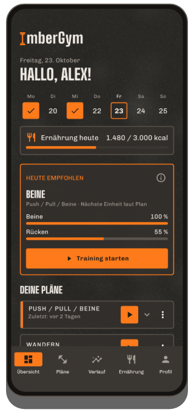
Woche
Die Leiste Mo–So zeigt erledigte Trainings orange mit Haken, kommende geplante Tage gestrichelt und den heutigen Tag mit Rahmen.
Heute empfohlen
Hat dein zuletzt genutzter Plan mehrere Einheiten, schlägt die Karte die passende Einheit vor – nach Plan-Reihenfolge und danach, wie erholt deine Muskeln sind (siehe Empfehlung). „Training starten“ legt sofort los.
Deine Pläne
- Alle Pläne stehen zugeklappt da, der zuletzt trainierte zuerst. Antippen klappt einen Plan auf und zeigt jede Einheit mit der letzten Durchführung (Dauer, Sätze, bewegtes Gewicht bzw. Strecke).
- ▶ startet die nächste Einheit. Hat der Plan mehrere Einheiten, fragt die App, welche – die nächste fällige steht oben.
- Eine Karte antippen öffnet das letzte Training dieser Einheit mit allen Sätzen.
- Über das Menü ⋮ kannst du einen Plan „Von Übersicht entfernen“ (mit Rückgängig). Er bleibt im Tab „Pläne“ und kommt zurück, sobald du ihn wieder trainierst.
- Freie Trainings der letzten vier Wochen erscheinen ebenfalls hier (Name aus den Übungen, z. B. „Wandern“) und lassen sich mit ▶ wiederholen.
Schnellstart unten
- Andere Einheit – beliebige Einheit eines Plans starten.
- Freies Training – ohne Plan, Übungen fügst du unterwegs hinzu.
- Intervall – Tabata & Co. PREMIUM
- Outdoor mit GPS – Laufen, Radfahren, Wandern aufzeichnen. PREMIUM
Je nach Einstellung zeigt die Übersicht außerdem „Ernährung heute“, „Supplements heute“, eine offene GPS-Aufzeichnung („fortsetzen“) und oben rechts ein Kartensymbol für deine Mitgliedskarten.
04Pläne & Vorlagen
Vorlagen
Im Tab „Pläne“ findest du fertige Pläne: Einsteiger (Studio, Zuhause mit und ohne Hanteln), Ganzkörper A/B, Oberkörper/Unterkörper, Push/Pull/Beine, Muskelgruppen-Splits, Bauch-Beine-Po, Calisthenics, Kettlebell, Bänder, Yoga und mehr. Eine Vorlage kannst du direkt starten oder als eigenen Plan übernehmen und anpassen. Beim Übernehmen fragt die App, ob der Satzpause-Timer laufen soll.
Eigenen Plan anlegen und bearbeiten
- Tab „Pläne“ → neuen Plan anlegen, Namen vergeben.
- Einheiten hinzufügen (z. B. Push, Pull, Beine). Einheiten sind eine Reihenfolge, keine festen Wochentage.
- In jeder Einheit Übungen hinzufügen und je Übung Sätze, Wiederholungen (auch als Bereich, z. B. 8–12), Satzpause und Pause bis zur nächsten Übung einstellen. „Je Seite“ markiert einseitige Übungen.
- Supersatz: zwei direkt aufeinanderfolgende Übungen verbinden – im Training wechseln sie sich ab, die Pause kommt nach der Runde.
- Intervall-Block (Tabata & Co.) unter der Liste hinzufügen – siehe Intervall-Training.
Jede Änderung wird sofort gespeichert. Oben zeigt eine Zeitschätzung, wie lange die Einheit ungefähr dauert. Im Editor schaltest du außerdem den Satzpause-Timer für diesen Plan und die Anzeige auf der Übersicht ein oder aus.
Plan per QR-Code teilen
Im Plan-Editor über das QR-Symbol: Der ganze Plan steckt im Code – ohne Server. „Als Bild teilen“ schickt ihn z. B. per Messenger. Teilen ist gratis.
Plan scannen PREMIUM: Tab „Pläne“ → „Plan scannen“, Code mit der Kamera erfassen oder aus einem Bild laden, Vorschau prüfen, „Übernehmen“.
Gratis sind bis zu 5 eigene Pläne (übernommene Vorlagen zählen mit); mit Premium unbegrenzt.
05Übungen
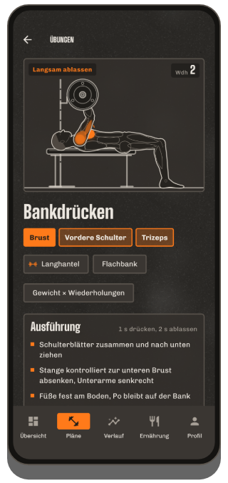
Übungsbibliothek
Über 250 Übungen von Maschine bis Yoga. Suche nach Name oder Muskel, filtere nach Muskel und Gerät.
Übungsdetail
- Animation der Bewegung mit den beteiligten Muskeln in Orange (Hauptmuskel kräftig, mitbeteiligte heller), Phase („Drücken“, „Langsam ablassen“) und Wiederholungszähler.
- Muskeln und Geräte, „Ausführung“ mit Tempo und Technik-Hinweisen.
- Dein Verlauf – Diagramm deiner Werte über die Trainings.
- Bei Calisthenics-Übungen die Progressionsstufen (leichter/schwerer).
Die Figur gibt es männlich und weiblich – einstellbar im Profil unter „Figur“.
Eigene Übung anlegen
- Bibliothek → eigene Übung anlegen.
- Name, Gerät und Erfassung wählen: Gewicht × Wiederholungen, Körpergewicht × Wiederholungen, Wiederholungen mit Bandstärke, Zeit, Cardio oder GPS-Aufzeichnung (für eigene Outdoor-Sportarten; dann auch „Tempo als Pace“ und „Automatische Pause“).
- Muskeln auf der Körperkarte antippen: 1× = Hauptmuskel, 2× = mitbeteiligt, 3× = aus.
Eigene Übungen mit Trainings werden beim Löschen archiviert – dein Verlauf bleibt. Gratis bis zu 5 eigene Übungen, mit Premium unbegrenzt.
06Training
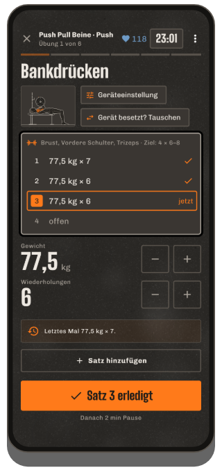
Starten
Über die Übersicht (▶, „Heute empfohlen“, „Andere Einheit“, „Freies Training“) oder im Tab „Pläne“. Ein laufendes Training übersteht auch einen Neustart des Handys – beim Öffnen landest du wieder darin.
Der Trainingsbildschirm
- Eine Übung pro Seite – seitlich wischen wechselt die Übung, ganz rechts ist die Abschlussseite. Oben siehst du Übung x von y, die Trainingsdauer und (mit Brustgurt) deinen Puls.
- Satzliste: erledigt, „jetzt“ (orange) und offen. Einen Satz antippen wählt ihn aus.
- Werte: Gewicht und Wiederholungen mit −/+ ändern oder die große Zahl antippen und eintippen (Komma und Punkt gehen beide). Werte vom letzten Mal sind schon vorausgefüllt.
- „Satz n erledigt“ hakt den Satz ab, startet die Pause und springt automatisch zur nächsten Übung bzw. im Supersatz zur Partnerübung.
- Satz hinzufügen für einen Extra-Satz. Nicht gemachte Sätze bleiben leer und werden beim Beenden verworfen.
Hilfen in der Satzkarte
- Vorschaubild der Übung antippen: Animation und Ausführung, ohne das Training zu verlassen.
- Geräteeinstellung (bei Maschinen, Kabel, Langhantel): z. B. Sitzhöhe merken – steht beim nächsten Mal da.
- Gewichtsschritt (z. B. bei Kurzhanteln): Schrittweite von −/+ je Gerät (Standard 2,5 kg bzw. 5 lb).
- Gerät besetzt? Tauschen bzw. Übung tauschen: passende Alternative wählen (nur bevor ein Satz der Übung erledigt ist).
- Steigerungsvorschlag: Hast du alle Wiederholungen geschafft, schlägt die App mehr Gewicht (bzw. weniger Unterstützung, stärkeres Band, nächste Stufe) vor. Erst „Übernehmen“ trägt ihn ein.
- Neuer Rekord! erscheint direkt nach dem Abhaken, wenn du einen früheren Bestwert übertriffst.
Menü ⋮
Übung hinzufügen, Trainingsort wählen PREMIUM, Karte vorzeigen PREMIUM, Satzpause-Timer an/aus, Übung entfernen, Training verwerfen.
Cardio und Halteübungen
Cardio-Übungen haben keine Sätze: Zeit und Distanz (beim Treppensteiger Stockwerke), an Geräten die Stufe, dann „Erledigt“. Halteübungen (z. B. Plank) erfassen Sekunden.
Körpergewicht und Unterstützung
Bei Körpergewichtsübungen trägst du Zusatzgewicht ein, bei unterstützten Übungen (z. B. Klimmzug mit Unterstützung) die Unterstützung – die App rechnet mit deinem Körpergewicht aus dem Profil. Fehlt es, fragt sie beim ersten Satz einmal danach.
Beenden
Auf der Abschlussseite „Training beenden“, oder über ✕ bzw. die Zurück-Taste: Die App fragt „Beenden / Verwerfen / Weiter trainieren“. Ohne erledigten Satz wird nichts gespeichert.
07Pause & Sperrbildschirm
- Nach jedem Satz läuft unten der Pausen-Countdown mit „Als Nächstes“, −15 s, +15 s und „Überspringen“. Die Länge kommt aus dem Plan (Satzpause bzw. Wechselpause zur nächsten Übung).
- Der Timer läuft weiter, wenn du das Handy sperrst oder eine andere App öffnest; eine Benachrichtigung zeigt den Countdown, am Ende kommt das Pausensignal.
- Pausensignal wählst du im Profil: Pieptöne, Gong, Glocke, Trillerpfeife, Ringglocke, Sanft, Systemton oder kein Ton – mit Probehören. Vibration ist ein eigener Schalter.
- Timer abschalten: pro Plan im Editor, für freie Trainings im Profil, mitten im Training über ⋮.
- Pulsbasierte Pause: mit Brustgurt endet die Pause, sobald dein Puls auf deinen Wert gesunken ist (frühestens nach 30 s, spätestens mit dem Timer).
Sperrbildschirm
Während eines Trainings erscheint ImberGym über der Sperre: Schriftzug und große Uhr (Pause bzw. Trainingsdauer). Nach 2 Minuten wird die Anzeige dunkler, Antippen macht sie wieder hell; „Zum Entsperren tippen“ führt zurück ins Training. Das Display bleibt während des Trainings an.
08Intervall-Training PREMIUM
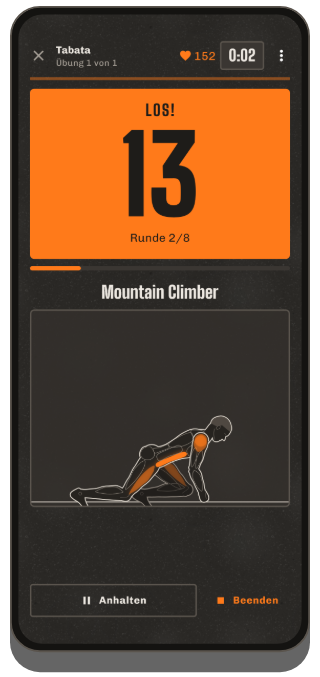
Schnellstart
- Übersicht → Kachel „Intervall“.
- Vorlage wählen: Tabata 20/10 × 8, HIIT 40/20 × 8, 30/30 × 10 oder EMOM 60 s × 10 – alles einstellbar: Belastung, Pause, Runden, Durchgänge und Pause zwischen den Durchgängen.
- Übungen hinzufügen – sie wechseln sich je Runde ab.
- „Intervalle starten“.
Ablauf
Nach 10 s Vorbereitung zeigt ein großer Countdown Belastung (orange) und Pause (grau, mit „Als Nächstes“ und Figur). Vor der Belastung zählt eine Stimme „One, two, three – go!“, vor ihrem Ende „Three, two, one – stop!“ (im Profil unter Pausensignal abschaltbar; dann Pieptöne). Das funktioniert auch bei gesperrtem Handy. Anhalten und Beenden sind jederzeit möglich; geschaffte Intervalle bleiben gespeichert. Am Ende trägst du auf Wunsch die Wiederholungen je Runde ein.
Im Plan
Im Plan-Editor „Intervall-Block (Tabata & Co.)“ hinzufügen – der Block erscheint im Training als eine eigene Seite.
Mit Kamera zählen EXPERIMENTELL
Bei Übungen ohne Gerät (Kniebeuge, Sprungkniebeuge, Split Squat, Reverse Lunge, Burpee, Liegestütz-Varianten) und den Bauchübungen Crunch, Sit-up, Reverse Crunch, V-Up, Beinheben und Knieheben im Liegen kann die Kamera die Wiederholungen zählen. Bei Plank, Unterarmstütz und Seitstütz misst sie die Zeit, in der du die Position sauber hältst: Die Intervall-Zeit läuft weiter, die gehaltene Zeit nur, solange Schulter, Hüfte und Knöchel eine Linie bilden – sonst erscheint „Hüfte hoch!“ bzw. „Hüfte runter!“.
- Auf der Block-Seite „Mit Kamera zählen (experimentell)“ antippen und die Kamera erlauben.
- Handy seitlich in 2–3 m Abstand aufstellen, z. B. an eine Wand oder Flasche gelehnt. Liegestütz, Bauch oder Stehen und Boden im Wechsel: Handy auf den Boden stellen – hochkant oder quer, die App gleicht die Lage aus.
- „Starten, wenn ich bereit bin“ – dann in Position gehen. Sobald du 2 Sekunden ruhig im Bild stehst, startet der Block von selbst (spätestens nach 20 Sekunden).
Während der Belastung stehen Sekunden und Wiederholungen nebeneinander, darunter „perfekt“ (volle Bewegung) und „normal“ (nicht ganz voll). Zu flache Wiederholungen zählen nicht. Am Ende zeigt die Auswertung je Übung und Runde die Wiederholungen, den Technik-Anteil und einen Tipp; die Werte sind vorausgefüllt und lassen sich ändern.
Das Kamerabild wird nur auf dem Handy ausgewertet und nicht gespeichert. Die Erkennung bleibt bei dir, auch wenn im Studio jemand hinter dir trainiert. Die Funktion ist noch in Erprobung – prüf die Werte am Ende kurz.
Challenge
Übersicht → Kachel „Challenge“ (gratis): „Wie viele Liegestütze schaffe ich?“ – die Kamera zählt. Drei Arten: Max. Wdh. (endet von selbst, wenn 6 Sekunden keine Wiederholung mehr kommt), Auf Zeit (so viele wie möglich in einer frei wählbaren Zeit in Minuten, z. B. 0,5, 1 oder 30) und Halten (Plank & Co., endet, wenn die Haltung 2 Sekunden nicht passt). Übung wählen, aufstellen wie oben, nach „3 – 2 – 1 – Los!“ geht es los. Am Ende siehst du das Ergebnis mit „perfekt“, deinen bisherigen Bestwert und ggf. „Neuer Rekord!“. Die Challenge wird automatisch gespeichert (steht im Verlauf und zählt bei den Rekorden; löschen geht dort). Mit „Teilen“ schickst du dein Ergebnis als Karte mit Übung, Wert und ggf. „Neuer Rekord!“ weiter.
09Tagesempfehlung & Plateau-Coach
Heute empfohlen
Für Pläne mit mehreren Einheiten: Ist die nächste Einheit laut Plan gut erholt (mindestens 85 %), wird sie empfohlen; sonst die am besten erholte. Die Karte zeigt die Erholung der wichtigsten Muskelgruppen und einen Hinweis wie „Beine erst 27 % erholt“. ⓘ erklärt die Regel. Abschaltbar im Profil.
Plateau-Coach PREMIUM
Wird eine Übung seit 4 Trainings (oder 3 Trainings über 3 Wochen) nicht besser, erscheint im Training vor dem ersten Satz ein gelber Hinweis mit Vorschlag, z. B. „heute leichter (70 kg × 8) und danach neu angreifen“.
- Übernehmen trägt das leichtere Gewicht (−10 %) in die offenen Sätze ein.
- Mehr zeigt den Verlauf und Möglichkeiten: Deload, anderer Wiederholungsbereich, eine Variante, längere Pause.
- 2 Wochen ausblenden, wenn du bewusst so weitermachen willst.
Cardio und Halteübungen bekommen keinen Plateau-Hinweis. Abschaltbar im Profil.
10Uhr (Wear OS) PREMIUM
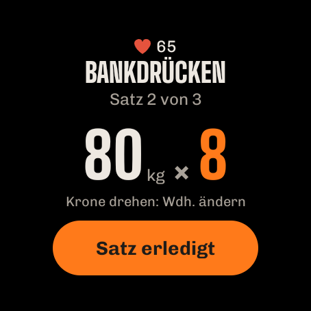
Mit einer Wear-OS-Uhr (z. B. Samsung Galaxy Watch 4 und neuer, Google Pixel Watch, OnePlus Watch, TicWatch) bedienst du das Training vom Handgelenk – das Handy kann in der Tasche bleiben. Alle Daten bleiben am Handy; die Uhr zeigt nur an und schickt deine Eingaben.
Installieren
- ImberGym muss am Handy installiert sein.
- Am einfachsten: Profil → „Uhr verbinden“ → „Auf der Uhr installieren“ – der Play Store öffnet sich direkt auf der Uhr. Die Seite zeigt auch, ob ImberGym auf der Uhr schon installiert ist. Alternativ auf der Uhr im Play Store nach ImberGym suchen.
- Beim ersten Öffnen auf der Uhr Benachrichtigungen und Puls erlauben.
Training starten
Die Uhr zeigt alle Pläne mit ihren Einheiten, die nächste ist orange. Antippen startet das Training am Handy und auf der Uhr. Läuft schon ein Training, zeigt die Uhr gleich den aktuellen Satz.
Satz
- Übung, „Satz 2 von 3“ und die Werte vom letzten Mal.
- Wert antippen → mit −/+ ändern (Gewicht im Gewichtsschritt). Zahl antippen → beliebigen Wert eintippen, z. B. 82,5.
- Mit Krone oder drehbarer Lünette ändert Drehen direkt die Wiederholungen.
- „Satz erledigt“ hakt den Satz ab – am Handy genauso.
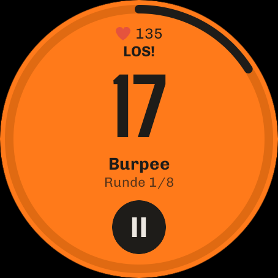
Pause
Countdown mit Ring; +15 verlängert, ▶ überspringt. Die Uhr zählt selbst und vibriert bei Pausenende – auch wenn die App nicht offen ist oder das Display aus ist. Am Ziffernblatt steht währenddessen ein ImberGym-Symbol mit der Restzeit.
Intervall-Training
Auf der Seite eines Intervall-Blocks zeigt die Uhr Art, Ablauf und Übungen mit „Intervalle starten“. Danach: Belastung orange, Pause dunkel mit „Als Nächstes“; Vibration bei jedem Wechsel. ⏸ hält an, dann ▶ weiter oder ✕ beenden. Die Wiederholungen je Runde trägst du danach am Handy ein.
Puls
Während des Trainings misst die Uhr den Puls und schickt ihn ans Handy – wie ein Brustgurt (Anzeige ❤, Pulszonen, Trainingsdetails). Ist ein Brustgurt verbunden, hat dieser Vorrang.
Kachel
Kachel „ImberGym“ zu den Kacheln der Uhr hinzufügen: Sie zeigt die nächste Einheit mit „Starten“ bzw. im Training die aktuelle Übung.
Ältere Uhren: Tizen-Uhren (z. B. Gear S3) werden nicht unterstützt. Garmin, Amazfit und andere können den Puls oft wie ein Brustgurt senden (siehe Puls).
11Outdoor & Trackshow PREMIUM
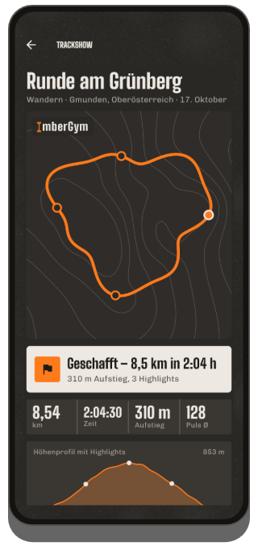
Aufzeichnen
- Übersicht → „Outdoor mit GPS“ → Aktivität wählen (Laufen, Radfahren, Wandern …).
- Standort „beim Verwenden der App“ erlauben. Aufzeichnung starten – das Display darf aus sein, eine Benachrichtigung zeigt „ImberGym zeichnet auf“.
- Pausieren und weiter jederzeit. Beim Laufen und Radfahren pausiert die App nach 10 s Stillstand automatisch und läuft beim ersten Schritt weiter (beim Wandern nicht – die Rast gehört zur Tour). Auch nach einer Pause von Hand geht es von selbst weiter, sobald du losgehst.
- „Beenden“ speichert die Tour als Training mit Strecke, Zeit, Tempo bzw. Pace und Höhenmetern (über das Barometer).
Trackshow
Nach dem Beenden spielt die Trackshow deine Route auf Höhenlinien ab – mit Kamerafahrt und Highlights (steilstes Stück, höchster Punkt, schnellster Kilometer, Rekord), Ergebnis-Karte und Höhenprofil. „Nochmal abspielen“ startet sie neu; den Ortsnamen kannst du antippen und ändern.
Teilen: als Story-Bild (9:16) oder als Video mit Kamerafahrt. In den Trainingsdetails gibt es außerdem den GPX-Export für andere Apps.
12Verlauf & Statistik
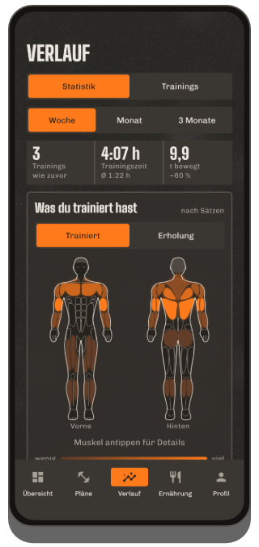
Statistik
- Zeitraum Woche / Monat / 3 Monate (rollierend bis heute) mit Vergleich zum Zeitraum davor: Trainings, Trainingszeit, bewegtes Gewicht.
- Was du trainiert hast PREMIUM: Körperkarte vorne/hinten, je mehr Sätze, desto kräftiger die Farbe; antippen zeigt die Zahl. Umschalter Erholung: wie erholt jeder Muskel ist (Schätzung).
- Verteilung auf die Muskelgruppen als Ring.
- Rekorde – die jüngsten, „Alle ansehen“ öffnet die Liste. Einen Rekord antippen zeigt den Verlauf der Übung.
- Gewicht & Körperfett einblenden sowie der Wochen- und Jahresrückblick als teilbare Karte.
Trainings
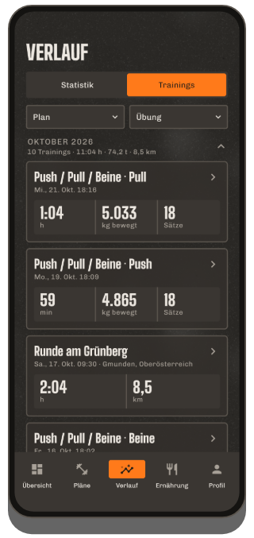
Alle Trainings nach Jahren und Monaten mit Summen. Filter nach Plan (auch „Freie Trainings“) und Übung, kombinierbar.
Trainingsdetails
- Alle Übungen und Sätze, Pokale für Rekorde, Studio bzw. Ort.
- Bearbeiten: Satz antippen und ändern, Sätze ergänzen oder löschen, Datum, Startzeit und Dauer anpassen, Training löschen.
- Puls (Ø, Maximum, Kurve) – vom Brustgurt oder über „Puls von der Uhr laden“.
- Training teilen als Karte mit Muskeln, Übungen und neuen Rekorden; bei GPS-Touren Trackshow und GPX.
Rekorde
Je Übung: Maximalgewicht, geschätztes 1RM, Volumen, meiste Wiederholungen, längster Halt; bei Cardio längste Strecke, schnellstes Tempo, längste Dauer. Ein Rekord zählt nur, wenn er einen früheren Bestwert übertrifft.
13Ernährung
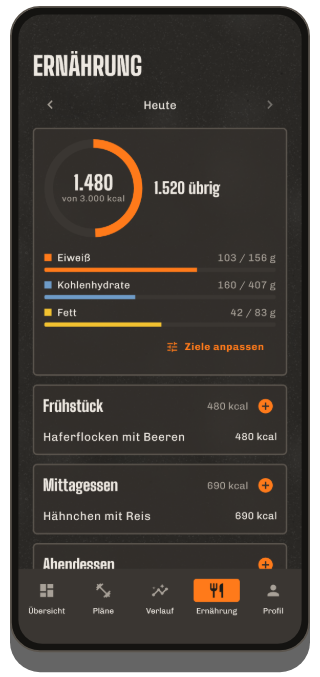
Der Tag
Mit ‹ › blätterst du durch die Tage. Der Ring zeigt gegessen gegen Ziel und „übrig“, darunter Eiweiß, Kohlenhydrate und Fett. Vier Mahlzeiten: Frühstück, Mittagessen, Abendessen, Snacks.
Eintragen
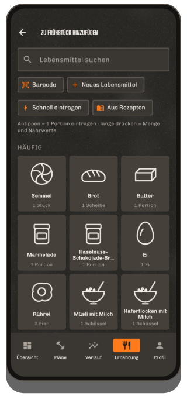
- + bei einer Mahlzeit öffnet die Kacheln: zuerst, was du zu dieser Mahlzeit oft isst, sonst typische Vorschläge.
- Antippen trägt sofort eine Portion ein (unter dem Namen steht, wie viel), mit „Rückgängig“. Das kleine − auf der Kachel nimmt eine Portion wieder weg.
- Lange drücken öffnet die Menge in Gramm, Millilitern oder Portionen (auch ½) mit Nährwerttabelle.
- Suche: über 1.200 Lebensmittel und Alltagsgerichte, offline, auch österreichische Begriffe (Erdäpfel, Topfen, Semmel …).
- Barcode: Produkt scannen – erst wird lokal gesucht, sonst bei Open Food Facts. Werte prüfen, speichern – beim nächsten Scan ist es sofort da.
- Eigenes Lebensmittel anlegen (Werte je 100 g bzw. 100 ml, Schalter „Flüssigkeit“) oder Schnell eintragen (nur kcal).
- Aus Rezepten – ein Rezept direkt in diese Mahlzeit.
- Einen Eintrag antippen ändert die Menge oder entfernt ihn.
Ziele
„Ziele anpassen“ (oder Ring antippen): Ziel wählen, Kalorienziel automatisch (aus Größe, Gewicht, Alter, Aktivität) oder eigenes, Makros einzeln, ein eigenes Ruhetag-Ziel. Dynamisches Kalorienziel PREMIUM: rechnet deine gemessene Aktivität aus Health Connect anteilig an (Regler 0–100 %).
Kein Interesse an Kalorien? Profil → Ernährung ausschalten; der Tab verschwindet.
14Rezepte
Ernährung → „Rezepte entdecken“ bzw. die Bibliothek: 40 eigene Rezepte mit Filtern (Mahlzeit, High Protein, Vegetarisch). Das Rezept zeigt kcal und Makros je Portion, Zutaten mit Portionsrechner (−/+, ½, ¼, ¾), Zubereitung und Tipp. „1 Portion ins Tagebuch“ trägt es ein. 6 Grundrezepte sind gratis, alle weiteren und eigene Rezepte (Zutaten aus der Lebensmittelsuche, eigenes Foto) gehören zu Premium PREMIUM.
15Gewicht, Körperfett & Fortschrittsfotos
Gewicht & Körperfett
- Profil → „Gewicht & Körperfett“ → Eintrag hinzufügen. Körperfett als Wert oder geschätzt über Umfänge (Hals, Taille, ggf. Hüfte – braucht die Größe im Profil).
- Die Karte „Aktuell“ zeigt den 7-Tage-Schnitt und die Veränderung. Diagramme PREMIUM mit Zeitraum 1 Monat, 3 Monate, 1 Jahr, Alles.
- Einträge stehen nach Monaten; antippen zum Ändern oder Löschen.
- Aus Health Connect übernehmen (z. B. Waage von Withings): Schalter einschalten, erlauben – neue Messungen kommen von selbst; nach unten ziehen aktualisiert sofort.
- Das Profilgewicht folgt immer dem neuesten Eintrag.
Fortschrittsfotos PREMIUM
Profil → „Fortschrittsfotos“: Ansicht wählen (vorne, seitlich, hinten), „Kamera“ zeigt dein letztes Foto halbtransparent als Vorlage (gleiche Pose und Abstand), mit Selbstauslöser. Vergleich vorher/nachher per Schieberegler oder Überblenden. Fotos bleiben in der App, nicht in der Galerie und nicht im Android-Backup; „Teilen / Sichern“, „Alle Fotos exportieren“ und „Vergleich teilen“ geben sie gezielt heraus.
16Puls & Health Connect
Puls von der Uhr
Trägst du eine Uhr, die in Health Connect schreibt (z. B. Samsung, Google, Garmin über Health Connect): In den Trainingsdetails „Puls von der Uhr laden“ – beim ersten Mal erlauben, danach holt ImberGym den Puls der letzten Trainings von selbst. Tipp: Starte auf der Uhr ebenfalls ein Training, sonst misst sie nur alle paar Minuten.
Huawei-Uhren: Huawei Health schreibt nicht nach Health Connect. Die App „Health Sync“ überträgt die Herzfrequenz – danach funktioniert es wie oben.
Brustgurt & Pulszonen
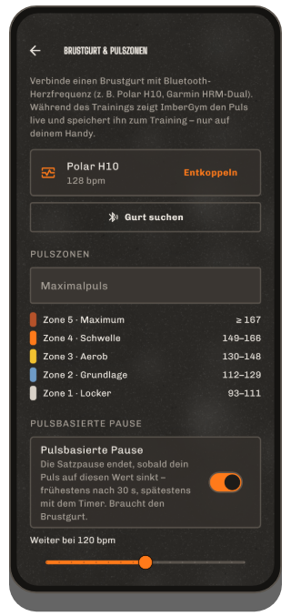
- Profil → „Brustgurt & Pulszonen“ → Gurt anlegen, „Suchen“, koppeln („Geräte in der Nähe“ erlauben).
- Im Training verbindet er sich von selbst; oben steht dein Puls in der Farbe der Zone.
- Maximalpuls einstellen (sonst 220 − Alter), fünf Zonen werden daraus berechnet.
- Optional pulsbasierte Pause mit eigener Schwelle (siehe Pause).
Viele Uhren können den Puls wie ein Gurt senden (z. B. Garmin „Herzfrequenz übertragen“, neuere Huawei-Uhren „Herzfrequenz teilen“, Polar, Coros, Suunto) – dann einfach wie einen Gurt koppeln.
17Supplements
Profil → „Supplements“: eigene Präparate anlegen (Name, Form, Einheit wie mg, IE, Stück, Tropfen …, gewohnte Menge, optional Wirkstoff je Einheit). Täglich „Genommen“ antippen (lange drücken = andere Menge, ↶ = rückgängig, auch für vergangene Tage). Die Erinnerung gibt es mit Uhrzeit und Wochentagen (täglich, Mo–Fr oder frei wählbar). Der Monatskalender zeigt, an welchen Tagen alles genommen wurde. ImberGym gibt bewusst keine Präparate oder Dosierungen vor.
18Studios & Mitgliedskarten PREMIUM
Meine Studios
Profil → „Meine Studios“: Studio mit Namen anlegen und „Aktuellen Standort übernehmen“. Startest du dort ein Training, erkennt die App das Studio automatisch (Meldung „Trainingsort erkannt“); sonst im Training über ⋮ → „Trainingsort wählen“. Der Ort steht im Verlauf, in den Details und im Kalendereintrag.
Mitgliedskarten
Profil → „Mitgliedskarten“: Strich- oder QR-Code der Karte mit der Kamera scannen oder Nummer und Format eingeben, Namen und Farbe wählen, Studio verknüpfen. Antippen zeigt die Karte im Vollbild mit voller Helligkeit – zum Scannen am Eingang. Schnell erreichbar über das Kartensymbol auf der Übersicht und im Training über ⋮ → „Karte vorzeigen“. Karten bleiben nur auf dem Handy (nie in einer Sicherung). Transponder-Chips (RFID/NFC) kann ein Handy leider nicht nachbilden.
19Kalender
Profil → „Trainings im Kalender speichern“: Erlaubnis geben, Kalender wählen; auf Wunsch werden bisherige Trainings nachgetragen. Jedes abgeschlossene Training wird als Termin eingetragen (Titel „ImberGym: Planname“, Start und Ende, Übungen und Sätze in der Beschreibung, Studio als Ort) und nach dem Bearbeiten aktualisiert bzw. beim Löschen entfernt. Beim Ausschalten fragt die App, ob die bisherigen Einträge gelöscht werden sollen. Es werden keine Termine im Voraus angelegt.
20Profil & Einstellungen
- Persönliches: Name, Geschlecht, Alter, Größe, Gewicht, Ziel, Aktivität.
- Sprache und Einheiten – der Wechsel wirkt sofort.
- Figur: männliche oder weibliche Figur in Animationen und Körperkarte.
- Pausensignal: Ton mit Probehören, Vibration, „Ansage im Intervall-Training“.
- Satzpause-Timer als Vorgabe für freie Trainings und neue Pläne.
- Tagesempfehlung und Plateau-Coach ein/aus.
- Ernährung ein/aus.
- Gewicht & Körperfett, Fortschrittsfotos, Supplements, Brustgurt & Pulszonen, Meine Studios, Mitgliedskarten, Kalender, Daten & Sicherung.
- ImberGym Premium, ImberGym bewerten und Über ImberGym (Version, Datenschutz, Kontakt, Quellen, Lizenzen).
21Sicherung, Import & Export
Sicherung
Profil → „Daten & Sicherung“ → Sicherung erstellen: eine ZIP-Datei mit allen Daten (Fortschrittsfotos nur, wenn du sie einschließt) – über das Teilen-Menü z. B. in Google Drive oder Dateien ablegen. Bewahre sie gut auf; ImberGym hat keine Cloud.
Wiederherstellen
„Sicherungsdatei wählen“ → Datum und Trainingszahl prüfen → „Ersetzen“. Die App startet neu mit den Daten der Sicherung. Auch auf der ersten Seite nach der Installation möglich.
Aus anderen Apps importieren
„CSV-Datei wählen“: Exporte aus Strong und Hevy werden erkannt (bei Strong die Gewichtseinheit wählen). Die Vorschau zeigt Trainings, Sätze und neue eigene Übungen; doppelte Trainings werden übersprungen.
Export
„Trainings als CSV exportieren“ – eine Zeile je Satz, öffnet sich z. B. in Excel.
23Hilfe
- Pausensignal kommt nicht? Benachrichtigungen für ImberGym erlauben und „Nicht stören“ prüfen.
- Puls fehlt bei kurzen Trainings? Ohne Training auf der Uhr misst sie nur alle paar Minuten – auf der Uhr mittrainieren oder einen Brustgurt nutzen.
- Studio wird nicht erkannt? Standort erlauben und den Standort des Studios einmal vor Ort übernehmen.
Fragen, Wünsche, Fehler: chr.mathai@gmail.com